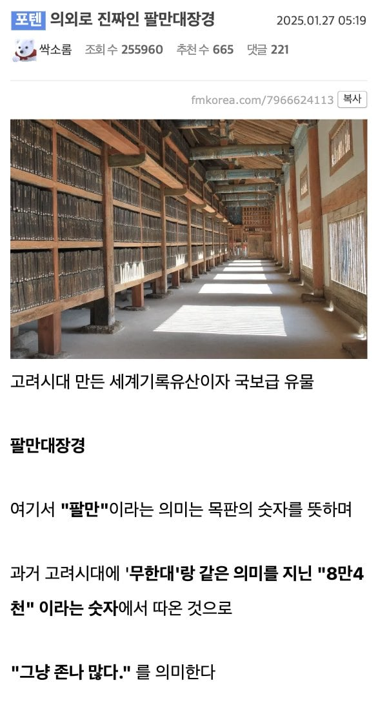
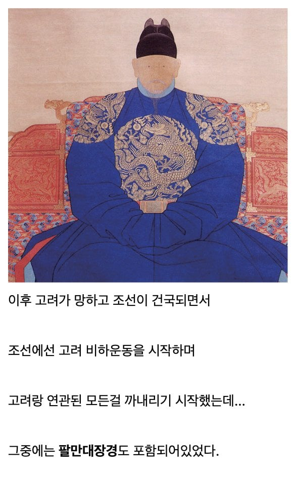
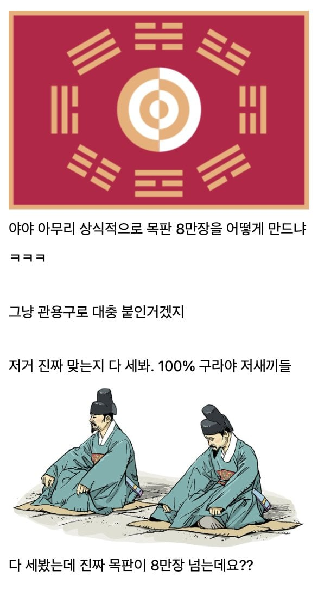
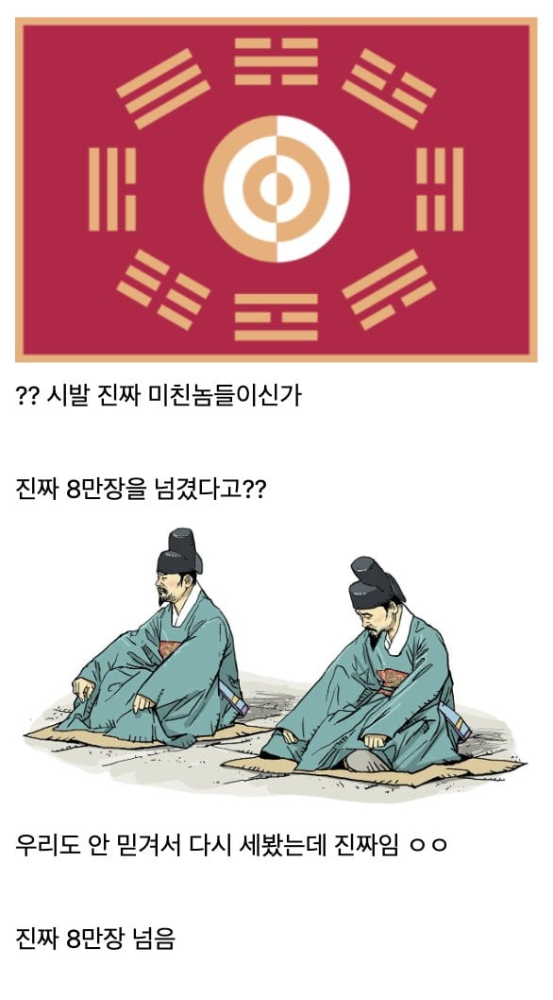
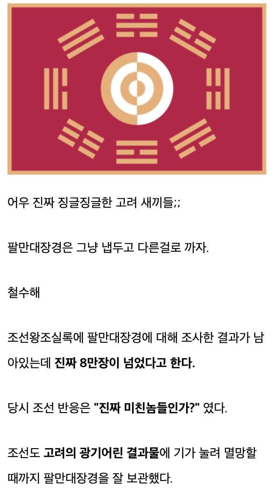
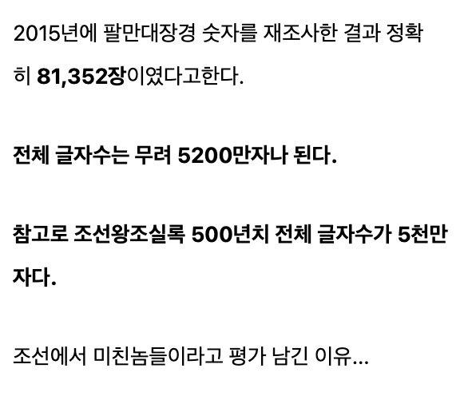

그 기록의 유전자는 나무위키가 계승중입니다.
미친놈들 맞네...
광기의 기록의 민족 ㅋ
5200만 글자를 뭔내용을 쓴거야
대충 그 시대에 나왔던 불경의 총집편? 대백과? 정도 되는 구성이라고 보면 됨
와 성경은 비교도 안되네 ㅋㅋㅋㅋ 이정도로 방대한 종교문서가 있었나?
총집편이면 어느 종교던지 양 개많을걸
성경도 몇번의 전체 공의회 같은걸 걸쳐서 사용하기로 합의된 경전이 지금의 성경이고 이 마저도 종파별로 약간은 다름
그런 자료까지 싹 다 모아놓으면 성경도 적은 자료는 아니여
520만자 중에 오탈자 158개.
걍 미친거임
와 개미쳤다 진짜 부처가 감탄할듯
아니 미친 그건 또 누가 센거야ㄷ
컴퓨터로 했을듯 미친 고려놈들
저건 목판인 만큼 당연히 먹물 발라서 책으로도 찍어냈음 이걸 불교 믿는 식자층, 지식인 층에 뿌린거고
무신정변으로 불안해진 식자층 회유용이라고 봐도됨, 우리가 칼밥으로 나라먹긴 했는데 너희가 좋아하는 불교 설법 목판으로 만들어서 언제든 책으로 만들 수 있게 해줄게
식자층이 안정되면 덤으로 근방 민심도 안정되는 거라 나라 결속용으로 만들었다고 보면됨
6.25때.. 무장공비가 숨어있다는 정보를 받고, 그 지역 폭격하려고 공군이 출격했다가
당시 편대장이 마침, 해인사를 알고 있던 한국군이어서 저기 폭격하면 안되.. 하고 작전취소 했다던 썰..을 들은 적 있는데
이거 진위 여부 아시는 개붕이분 계신가여
꽤 유명한 사실인데
오오... 정말 굉장하네잉 ㅋ
1951년에 미군이 해인사에 공비 숨어있다고 폭격 명령내렸는데 고 김영환(당시대령)장군이 해당 명령 거부하고 사형당할 위기까지 갔던 사건임. 그때 폭격했으면 팔만대장경도 소실되었겠지.
당시 몽골생각하면 만들만했음ㅋㅋ
부처를 향한 깜지 졸라 많이 썼네
아오 몽골시치
사실상 기록 광기의 시발점 아님? ㅋㅋㅋㅋ
와 생각해보면 8만개가 넘는 목판을 만들기 위해서 전국에서 나무를 구하고 그 나무를 목판으로 만들기위해서 2~3년동안 공정을 가해서 목판을 준비하고 5천만자가 넘는 글을 일정한 서체로 만들기 위해서 수많은 서예가가 글씨를 쓰고 수천명의 장인이 목판에 새기고 거기다가 5천만자가 넘는 목판에서 오탈자는 0.0003%인 158자밖에 안되는 엄청난 공정관리까지.
그냥 관리가 미친클래스인듯.
이거 원래 일본 귀찮아서 줄려다가 이래저래 상황 안맞아서 못준걸로 앎